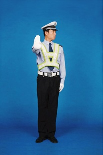
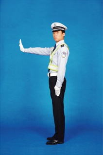
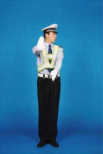
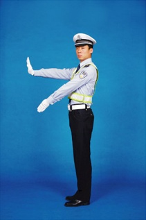
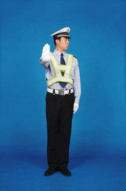
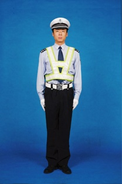

示意：准许车辆左转弯，在不妨碍被放车辆通行的情况下可以调头
1.右臂向前平伸与身体成90度，掌心向前，手掌与手臂夹角不低于60度，五指并拢，面部及目光同时转向左方45度；
2.左臂与手掌平直向右前方摆动，手臂与身体成45度，掌心向右，中指尖至上衣中缝，高度至上衣最下面一个纽扣；
3.左臂回位至不超过裤缝，面部及目光保持目视左方45度，完成第一次摆动；
 4.重复（2）动作；
5.重复（3）动作，完成第二次摆动；
6.收右臂，面部及目光转向前方，恢复立正姿势。